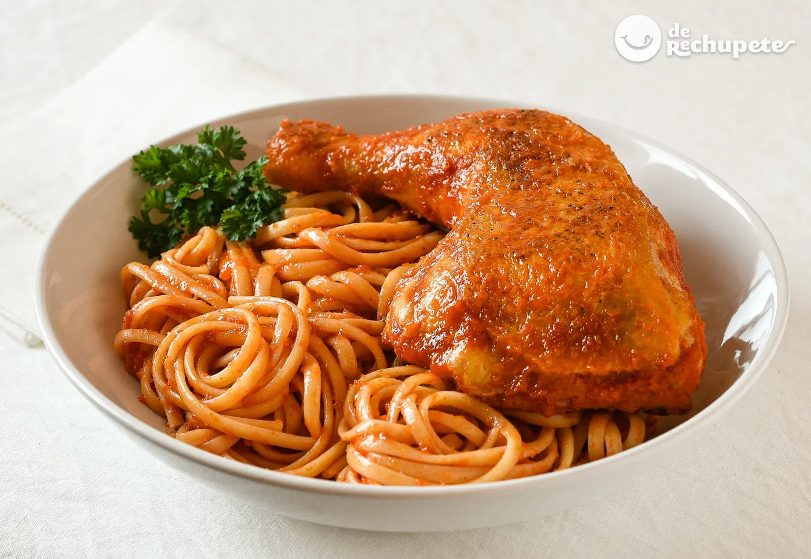

Tallarines rojos

Descripción:
Plato tradicional peruano, hecho con una salsa roja de tomate, cebolla y ajo, acompañado de carne o pollo.
Ingredientes:
- 250 g de tallarines
- 1/2 kg de carne de res o pollo en trozos
- 1 cebolla picada
- 2 dientes de ajo
- 3 tomates licuados o 1 taza de salsa de tomate
- 1/2 taza de zanahoria rallada (opcional)
- 1 hoja de laurel
- Aceite, sal, pimienta, comino
- Queso rallado (opcional)
Preparación:
- Cocina los tallarines al dente, escúrrelos y reserva.
- En una olla, dora la carne o pollo con sal, pimienta y comino. Retira.
- En el mismo aceite, sofríe la cebolla y el ajo hasta que estén dorados.
- Agrega los tomates licuados, laurel y zanahoria. Cocina por 10-15 min.
- Incorpora la carne cocida a la salsa y cocina 10 minutos más.
- Mezcla la salsa con los tallarines. Sirve con queso rallado si deseas.
Volver al Inicio